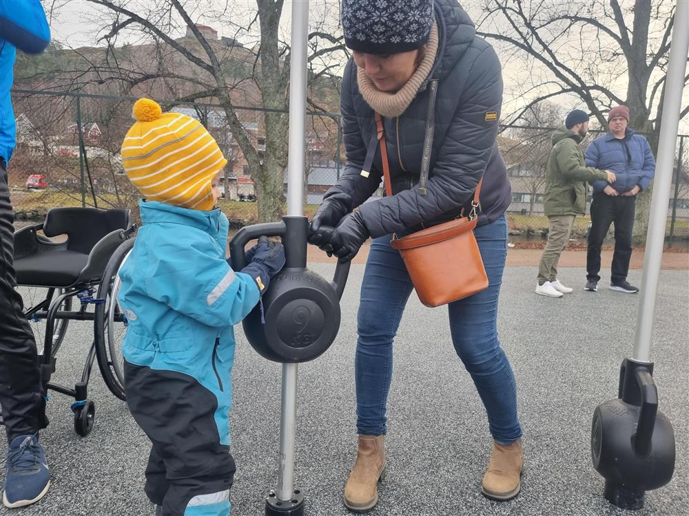
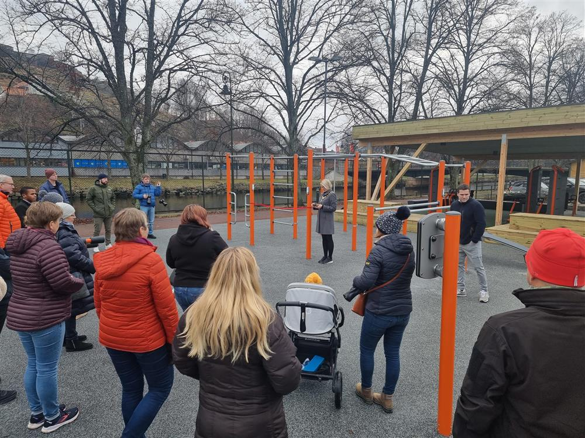
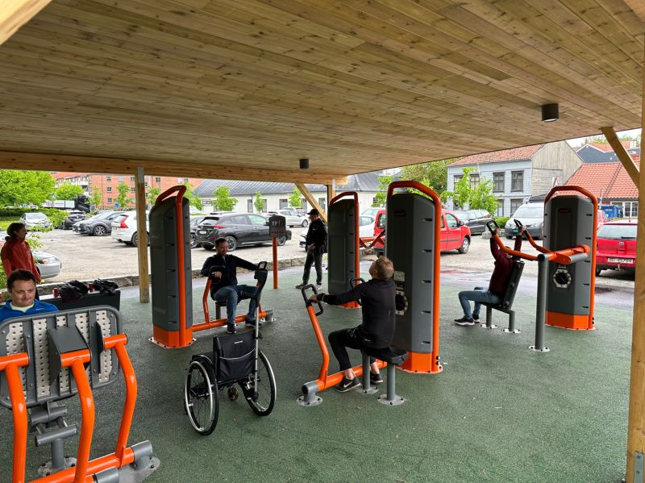
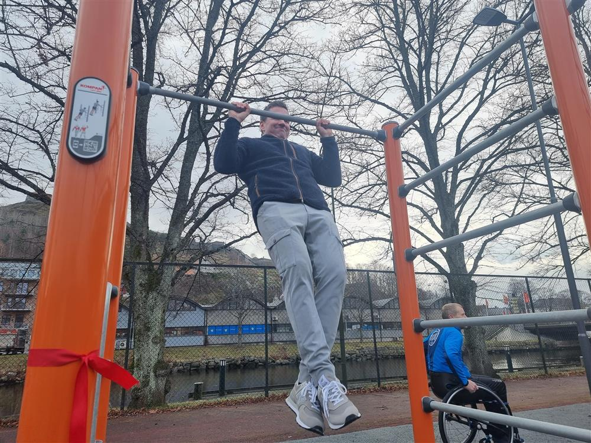

Søvn gir god forbrenning, så pass på at du sover nok.
Stryketrening skal gjøre litt vondt, mange unngår å legge på en ekstra vekt.
Det er også viktig å hvile etter en treningsøkt.
Drikk nok vann i løpet av dagen, så du ikke får vondt i hodet.
Unngå å få hold, selv om man ikke helt vet hvordan man får det.
Start og avslutt treningen med en rolig joggetur til du er god og varm.
Bruk hjelpemidler som en klokke for å sørge for å få oversikt om forbrenning,intensitet og puls både underveis i øktene og fra gang til gang.




Her er bilder fra første dagen når parken åpnet. Parken er sentralt og et godt sted for alle.
Velkommen til Stranda Trimpark
Vi er stolte av å tilby et mangfold av treningsmuligheter for alle aldre og ferdighetsnivåer. Vår park er designet med tanke på din komfort og treningsglede.
Utforsk vårt treningsutstyr
Enten du er nybegynner eller en erfaren atlet, har vi et bredt spekter av utstyr som passer dine behov. Ta en titt på vårt varierte utvalg og oppdag nye treningsmuligheter.
Samfunnssentrert park
Vår park er et sted for fellesskap og velvære. Vi ønsker å skape et vennlig miljø der alle kan møtes, trene og trives. Kom og bli en del av vårt trimpark-samfunn!